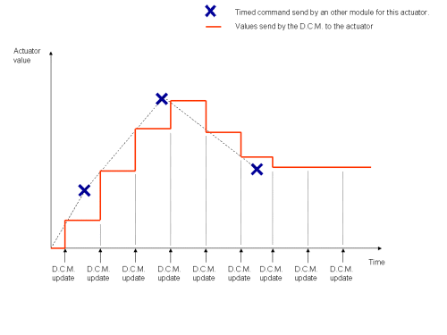
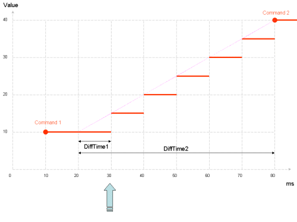
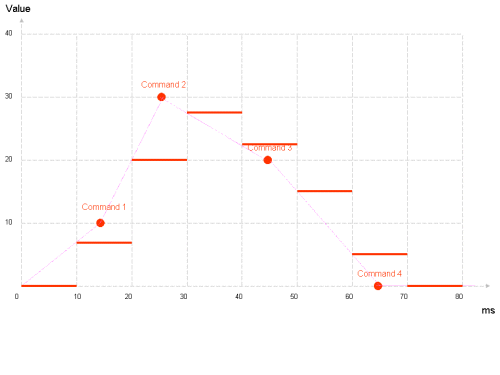

DCM advanced¶
Learning more about timed commands treatment¶
Timed-command buffers¶
The DCM stores in a buffer all timed commands of each Actuator. At each DCM cycle it will analyze the previous and next order (if there are some) based on the current time and compute the appropriate command to send using a linear interpolation.
Previous commands are deleted after their use.
Currently, there is a limit of 512 timed commands stored in the DCM for each Actuator.
For suitable Actuator and values (joints position, stiffness, leds ...), the DCM automatically generates a linear approximation between the previous command and the next one (if there is one). This approximation is computed every DCM cycle and sent to the appropriate device.
As the command time does not fit the update time of the DCM, values asked could not be reached precisely (see example below), but they will follow by the evolution.
{kind=link}
If there is no other order, the last one is kept and sent again to the actuator all next DCM cycle.
For some Actuator, there is no interpolation possible. For them, the previous command is sent and then deleted. A future command has no effect until the time is reached.
The main interests of timed command are:
- There is no need for the upper level to know precisely the DCM update time, because precise command times are automatically used by the DCM to send a good evolution of the command to actuators. The only thing is that you need to send command a bit in the future (more than one DCM cycle time).
- As the DCM knows the future of actuators commands, it can send them previously (using its own thread and the chestboard) so that there is no delay between two commands (from the actuator point of view), even if the module itself has a delay (due to CPU high usage or something else).
- By default, commands are smooth due to interpolation (smooth commands are always better for the robot). But you can still send very fast commands if you want (it could be dangerous for the robot as far as joints are concerned, beware !)
- The linear interpolation is simple but always suitable. For more complex interpolations, you can approximate them to a few linear ones. Using this, you reduce the number of commands to send to the low level.
- You can send a whole choreography to many actuators at the same time, and then whatever the communication delay or lags are (even using wifi), actuators commands will be sent correctly. But sending command using wifi or Internet means that you can not react very fast. You need to anticipate commands.
- You can synchronize many actuators from different modules, just sharing the date.
It’s also possible not to use the date and linear interpolation of the DCM The main interest is if you want to update actuators orders at the D.C.M cycle speed (it’s better with a real time synchronisation). Not to use the interpolation, just send order immediately (with date = current date). At the next DCM cycle, the order will be applied immediately.
Timed command interpolation algorithm¶
Here is a description of the interpolation algorithm.
For each Actuator, the following data are kept in memory:
sendCommandIntis the last interpolated command as an integer. This is sent to the Actuator, and initialized to 0.sendCommandDoubleis the last computed command, but this one in double precision, to keep the precision for the next computation.sendCommandIntis the nearest integer tolastCommandDouble.lastCommandValueis the value of the last timed command, without interpolation.lastCommandTimeis the exact time of the last command.lastCycleTimeis the last time when this Actuator has run through the algorithm.
At each DCM cycle, for each Actuator, the following algorithm is run:
continue = True
while (continue is True and commands is not empty):
# get the next comment (they are sorted)
command = commands[0]
if (command.time >= currentTime):
# the command is right now or in the future
# after this command, we will not process the commands list further
continue = False
if (command.time =< currentTime):
# the command is in the past
# store the command data for applying it and/or for
# future interpolations
sendCommandDouble = command.value
lastCommandValue = command.value
lastCommandTime = command.time
# remove this timed command from the list
commands.pop(0)
else:
# the command is in the future
# choose the starting point for the interpolation
if (lastCycleTime < lastCommandTime):
tmpTime = lastCommandTime
tmpCommand = lastCommandValue
else:
tmpTime = lastCycleTime
tmpCommand = lastCommandDouble
# compute the interpolation
dT1 = currentTime - varLastTime
dT2 = command.time - varLastTime
sendCommandDouble = ((command.value - tmpCommand)*dT1)/dT2 + tmpCommand
sendCommandInt = round(lastCommandDouble)
lastCycleTime = currentTime
actuator.set(sendCommandInt) # send the command to the actuator
Warning
Sending 2 or more timed commands at exactly the same date (in ms) with different values will result in unpredictable result.
First example¶
We suppose that there is a DCM cycle every 10ms.
The command 1 was sent to (10,10). (first number is time, second is value, like degrees for joints).
At t=30ms (or between 20 and 30) the DCM received another command at (80,40).
Here is the computation of the next cycles:
| t (ms) | dT1 (ms) | dT2 (ms) | sendCommandDouble |
|---|---|---|---|
| 30 | 30 - 20 = 10 | 80 - 20 = 60 | (40 -10)*10)/60 + 10 = 15 |
| 40 | 40 - 30 = 10 | 80 - 30 = 50 | ((40 -15)*10)/50 + 15 = 20 |
| 50 | 50 - 40 = 10 | 80 - 40 = 40 | ((40 -20)*10)/40 + 20 = 25 |
| 60 | 60 - 50 = 10 | 80 - 50 = 30 | ((40 -25)*10)/30 + 25 = 30 |
| 70 | 70 - 60 = 10 | 80 - 60 = 20 | ((40 -30)*10)/20 + 30 = 35 |
| 80 | 80 - 70 = 10 | 80 - 70 = 10 | ((40 -35)*10)/10 + 35 = 40 |
Then the value stays at 40 for the next cycles, until another command is sent.
Second example¶
We suppose that there is a DCM cycle every 10ms.
At t=10ms (or between 0 and 10), the DCM received 4 commands for this actuator: (15, 10) (25, 30) (45,20) and (65, 0).
Here is the computation of the next cycles:
| t (ms) | dT1 (ms) | dT2 (ms) | sendCommandDouble |
|---|---|---|---|
| 10 | 10 - 0 = 10 | 15 - 0 = 15 | ((10 -0)*10)/15 + 0 = 6.66 |
| 20 | 20 - 15 = 5 | 25 - 15 = 10 | ((30 - 10)*5)/10 + 10 = 20 |
| 30 | 30 - 25 = 5 | 45 - 25 = 20 | ((20 - 30)*5)/20 + 30 = 27.5 |
| 40 | 40 - 30 = 10 | 45 - 30 = 15 | ((20 - 27.5)*10)/15 + 27.5 = 22.5 |
| 50 | 50 - 45 = 5 | 65 - 45 = 20 | ((0 - 20)*5)/20 + 20 = 15 |
| 60 | 60 - 50 = 10 | 65 - 50 = 15 | ((0 - 15)*10)/15 + 15 = 5 |
| 70 and above | 0 |
Using “onPreProcess” and “onPostProcess”¶
Warning
These callbacks are dangerous. Use them with care and only if you are comfortable with real-time, multithread, and precise timing.
The DCM provides a simple way to synchronize to its real time thread.
You can define a callback function called by the DCM just after its sleep (PreProcess), or just before going back to sleep (PostProcess).
onPreProcess is useful because it’s called just before the computation of orders sent to the chestboard (USB). Sending commands at this level means that you have the shortest delay to your command.
onPostProcess is called just after all value are updated in the ALMemory, and so at this time you have the newest values of all sensors.
These two callbacks can’t send/receive information, you still need to use the DCM API to send commands, and read the ALMemory to get sensors values.
Real-time and timing consideration¶
Being called by the DCM thread means that your function is now real time. To keep the real time efficient and to avoid delay in the DCM cycle, you must:
- Avoid all kind of memory allocation
- Avoid all kind of printf, cout,... and file access
- Of course avoid all system calls that yield and/or can possibly use a lot of time
- Return from the call back after a short time, a few ms max
- Your function must have a mostly constant timing every cycle. If your call back last for 1ms, then 10ms, then 1ms... this will give bad result on joint control loop
Note
You can find an example of callback in the fastgetsetexample folder in the sdk.